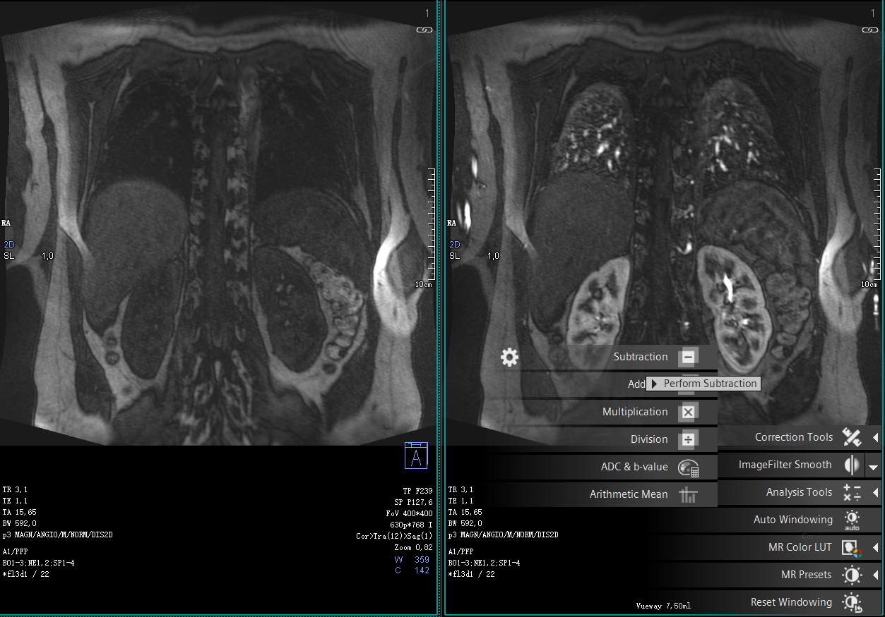
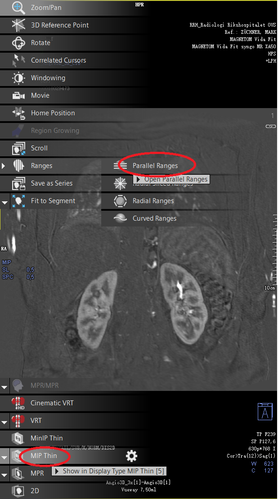
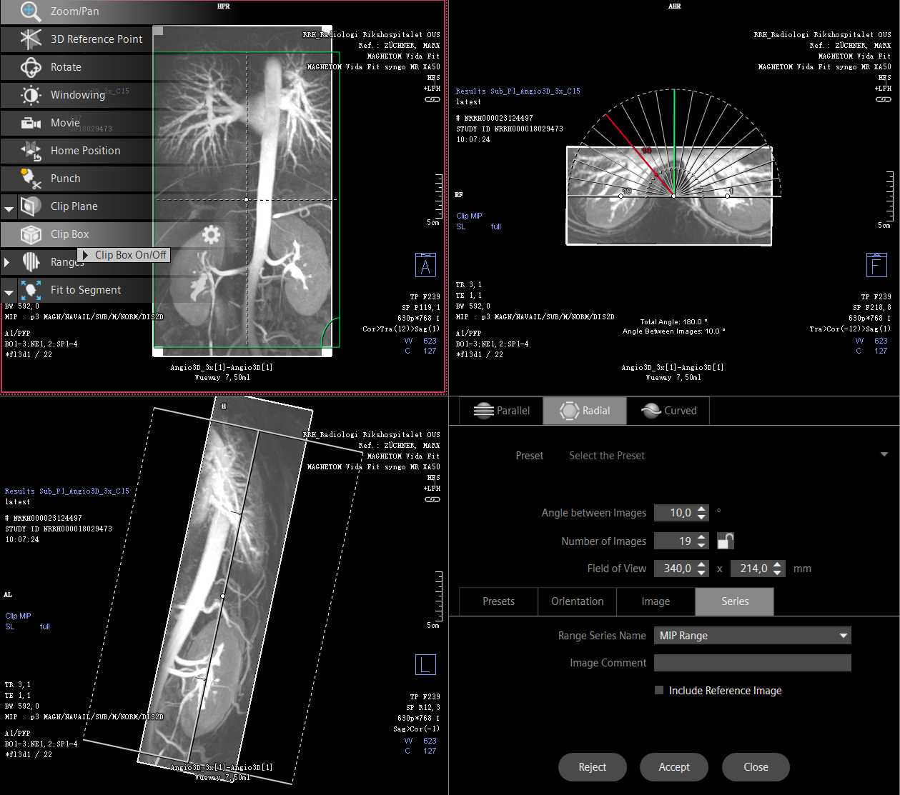

Merk tomfase og arteriell fase i viewing
Velg subtraction i menyen til venstre eller under analysis tools i solen nede til høyre i bildet.

Dra inn den subtraherte serien i viewing. Aktiver MIP Thin med (5) eller nede til venstre i bildet. Velg ranges og rekontruer i tre plan
I syngo: Ranges finner man i hodet 🗣 øverst til venstre i bildet etter man har aktivert MIP Thin

Det bør rekonstrueres MIP på aksialt snitt fra 19 vinkler (projeksjoner) i 180 grader felt, fra høyre mot venstre.
Mens du fortsatt er inne i ranges, velg radial ranges. Aktiver MIP ved å trykke (4) eller nederst til venstre i bildet.
Bruk Clip Box i hodet 🗣 øverst til venstre i bildet til å snevre inn FOV
